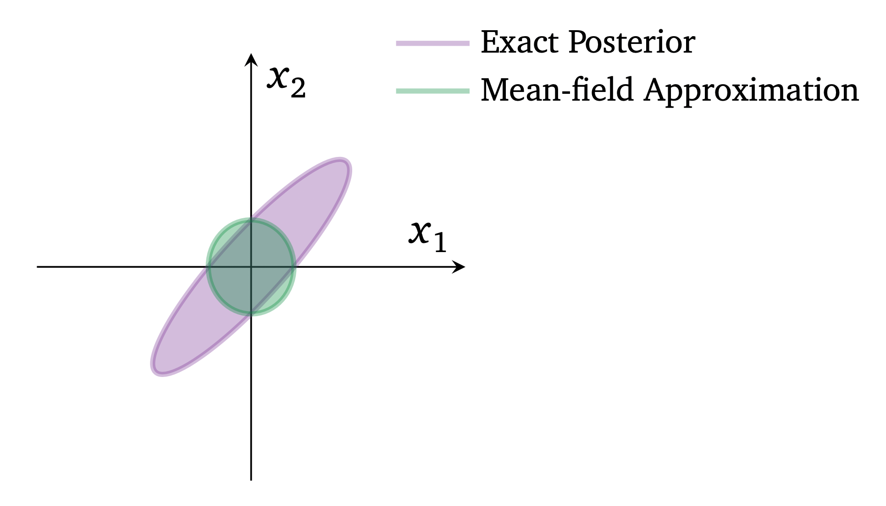

Thanasi Bakis
June 05, 2022
Blei, D. M., Kucukelbir, A., & McAuliffe, J. D. (2017). Variational inference: A review for statisticians. Journal of the American statistical Association, 112(518), 859-877.
Variational inference (VI) is a technique for approximating intractable distributions.
This arises frequently in Bayesian statistics, when a posterior density cannot be analytically evaluated due to an intractable marginal likelihood:
\[ p(\mathbf{z} | \mathbf{x}) = \frac{p(\mathbf{z}) p(\mathbf{x} | \mathbf{z})}{\int p(\mathbf{z}) p(\mathbf{x} | \mathbf{z}) \, d\mathbf{z}} \]
Sound familiar?
MCMC and VI are two tools for the same job.
MCMC
VI
While VI lacks in exactness, it can make Bayesian inference possible in scenarios where MCMC is impractical (eg. very large data sets, deep learning).
Goal: approximate \(p(\mathbf{z} | \mathbf{x}) \propto p(\mathbf{z}) p(\mathbf{x} | \mathbf{z})\)
Key steps:
The family can be some parametric form, eg. \(\mathcal{Q} = \{ N(\mu, \sigma^2) : \mu \in \mathbb{R}, \sigma^2 > 0 \}\).
In this case, choosing the “best” \(q\) distribution amounts to choosing the “best” parameter values.
These parameters are called the variational parameters, \(\mathbf{\phi}\).
Specifically, we choose the \(q\) that is the closest to the target, in terms of KL divergence:
\[ q^*(\mathbf{z}) = \underset{q \in \mathcal{Q}}{\text{arg min}} \, \text{KL} \big( q(\mathbf{z}) \, || \, p(\mathbf{z} | \mathbf{x}) \big) \]
This might not look easy, since it isn’t obvious how to measure divergence involving the posterior if we don’t know the posterior…
Similar to MCMC (Metropolis-Hastings ratio), knowing the posterior up to a constant is good enough!
Specifically, we choose the \(q\) that is the closest to the target, in terms of KL divergence:
\[ q^*(\mathbf{z}) = \underset{q \in \mathcal{Q}}{\text{arg min}} \, \text{KL} \big( q(\mathbf{z}) \, || \, p(\mathbf{z} | \mathbf{x}) \big) \]
Similar to MCMC (Metropolis-Hastings ratio), knowing the posterior up to a constant is good enough!
\[ \begin{aligned} \text{KL} \big( q(\mathbf{z}) \, || \, p(\mathbf{z} | \mathbf{x}) \big) &= \mathbb{E}_{\mathbf{z} \sim q} \big[ \log q(\mathbf{z}) - \log p(\mathbf{z} | \mathbf{x}) \big] \\ &= \mathbb{E}_{\mathbf{z} \sim q} \big[ \log q(\mathbf{z}) - \log p(\mathbf{z}, \mathbf{x}) \big] + \log p(\mathbf{x}) \end{aligned} \]
Specifically, we choose the \(q\) that is the closest to the target, in terms of KL divergence:
\[ q^*(\mathbf{z}) = \underset{q \in \mathcal{Q}}{\text{arg min}} \, \text{KL} \big( q(\mathbf{z}) \, || \, p(\mathbf{z} | \mathbf{x}) \big) \]
\[ \begin{aligned} \text{KL} \big( q(\mathbf{z}) \, || \, p(\mathbf{z} | \mathbf{x}) \big) &= \mathbb{E}_{\mathbf{z} \sim q} \big[ \log q(\mathbf{z}) - \log p(\mathbf{z} | \mathbf{x}) \big] \\ &= \mathbb{E}_{\mathbf{z} \sim q} \big[ \log q(\mathbf{z}) - \log p(\mathbf{z}, \mathbf{x}) \big] + \log p(\mathbf{x}) \end{aligned} \]
Minimizing the KL is then equivalent to minimizing this expectation.
\[ \begin{aligned} \text{KL} \big( q(\mathbf{z}) \, || \, p(\mathbf{z} | \mathbf{x}) \big) &= \mathbb{E}_{\mathbf{z} \sim q} \big[ \log q(\mathbf{z}) - \log p(\mathbf{z} | \mathbf{x}) \big] \\ &= \mathbb{E}_{\mathbf{z} \sim q} \big[ \log q(\mathbf{z}) - \log p(\mathbf{z}, \mathbf{x}) \big] + \log p(\mathbf{x}) \end{aligned} \]
Instead of minimizing the expectation, the VI literature maximizes its negative, and calls this quantity the evidence lower bound (ELBO):
\[ \text{ELBO}(q) := \mathbb{E}_{\mathbf{z} \sim q} \big[ \log p(\mathbf{z}, \mathbf{x}) - \log q(\mathbf{z}) \big] \\ \]
Then:
\[ \text{KL} \big( q(\mathbf{z}) \, || \, p(\mathbf{z} | \mathbf{x}) \big) = -\text{ELBO(q)} + \log p(\mathbf{x}) \]
Instead of minimizing the expectation, the VI literature maximizes its negative, and calls this quantity the evidence lower bound (ELBO):
\[ \text{ELBO}(q) := \mathbb{E}_{\mathbf{z} \sim q} \big[ \log p(\mathbf{z}, \mathbf{x}) - \log q(\mathbf{z}) \big] \\ \]
Then:
\[ \text{KL} \big( q(\mathbf{z}) \, || \, p(\mathbf{z} | \mathbf{x}) \big) = -\text{ELBO(q)} + \log p(\mathbf{x}) \]
Why the name?
\[ \begin{aligned} \text{ELBO(q)} &= \log p(\mathbf{x}) - \text{KL} \big( q(\mathbf{z}) \, || \, p(\mathbf{z} | \mathbf{x}) \big) \\ &\leq \log p(\mathbf{x}) \end{aligned} \]
Instead of minimizing the expectation, the VI literature maximizes its negative, and calls this quantity the evidence lower bound (ELBO):
\[ \text{ELBO}(q) := \mathbb{E}_{\mathbf{z} \sim q} \big[ \log p(\mathbf{z}, \mathbf{x}) - \log q(\mathbf{z}) \big] \]
Fun fact about the ELBO: it can be rewritten and interpreted as a balance of two objectives…
\[ \text{ELBO}(q) = \mathbb{E}_{\mathbf{z} \sim q} \big[ \log p(\mathbf{x} | \mathbf{z}) \big] - \text{KL} \big( q(\mathbf{z}) \, || \, p(\mathbf{z}) \big) \]
As a review, the objective is:
\[ \underset{q \in \mathcal{Q}}{\text{arg max}} \, \text{ELBO}(q) = \underset{q \in \mathcal{Q}}{\text{arg max}} \, \mathbb{E}_{\mathbf{z} \sim q} \big[ \log p(\mathbf{z}, \mathbf{x}) - \log q(\mathbf{z}) \big] \]
One very common type of \(\mathcal{Q}\) we propose is called the mean-field family. Essentially, it only contains distributions that enforce independence between latent variables:
\[ q(\mathbf{z}) = q_1(z_1) \cdot q_2(z_2) \cdot q_3(z_3) \cdot \ldots \]
This is a trade-off: we lose flexibility in our approximation, but we gain a simpler optimization landscape.
This is a trade-off: we lose flexibility in our approximation, but we gain a simpler optimization landscape.
eg. If we target a bivariate normal with correlation, the best we can do is a diagonal covariance matrix, since the mean-field approximation forces posterior independence.
Let’s explore a Gaussian mixture model (known variance).
Then,
\[ x_i | \mathbf{c_i}, \mu \sim N(\mathbf{c_i}' \mu, 1) \]
for \(i = 1...n\).
Gaussian mixture model:
\[ x_i | \mathbf{c_i}, \mu \sim N(\mathbf{c_i}' \mu, 1) \]
In the Bayesian setting, we place priors on the latent variables:
\[ \begin{aligned} \mu_k &\sim N(0, \sigma^2) \qquad &k &= 1...K \\ \mathbf{c_i} &\sim \text{Categorical}(\frac{1}{K}, ..., \frac{1}{K}) &i &= 1...n \end{aligned} \]
The goal is to do inference on \(\mathbf{z} := \{\mu_1, \ldots, \mu_K, \mathbf{c_1}, \ldots, \mathbf{c_n}\}\).
The goal is to do inference on \(\mathbf{z} := \{\mu_1, \ldots, \mu_K, \mathbf{c_1}, \ldots, \mathbf{c_n}\}\).
We propose the following mean-field variational family:
\[ q(\mathbf{z}; \mathbf{\phi}) = \prod_{i=1}^K q(\mu_k; m_k, s_k^2) \prod_{i=1}^n q(\mathbf{c_i}; \mathbf{\pi_i}) \]
where:
Variational parameters \(\mathbf{\phi} = \{ m_1, \ldots, m_K, s_1^2, \ldots, s_K^2, \mathbf{\pi_1}, \ldots, \mathbf{\pi_K} \}\)
The goal is to do inference on \(\mathbf{z} := \{\mu_1, \ldots, \mu_K, \mathbf{c_1}, \ldots, \mathbf{c_n}\}\).
We propose the following mean-field variational family:
\[ q(\mathbf{z}; \mathbf{\phi}) = \prod_{i=1}^K q(\mu_k; m_k, s_k^2) \prod_{i=1}^n q(\mathbf{c_i}; \mathbf{\pi_i}) \]
Variational parameters \(\mathbf{\phi} = \{ m_1, \ldots, m_K, s_1^2, \ldots, s_K^2, \mathbf{\pi_1}, \ldots, \mathbf{\pi_K} \}\)
Objective: \(\underset{q}{\text{arg max}} \, \text{ELBO}(q) = \underset{\mathbf{\phi}}{\text{arg max}} \, \text{ELBO}(q)\)
ie. Finding the optimal \(q\) in this family amounts to finding the optimal variational parameters.
Objective: \(\underset{q}{\text{arg max}} \, \text{ELBO}(q) = \underset{\mathbf{\phi}}{\text{arg max}} \, \text{ELBO}(q)\)
To perform this optimization, we are going to leverage the mean-field assumption and play a trick…
\[ \begin{aligned} \text{ELBO}(q) &= \mathbb{E}_{\mathbf{z} \sim q} \big[ \log p(\mathbf{z}, \mathbf{x}) - \log q(\mathbf{z}) \big] \\ &= \mathbb{E}_{z_j \sim q_j} \big[ \mathbb{E}_{\mathbf{z_{-j}} \sim q_{-j}} \big[ \log p(\mathbf{z}, \mathbf{x}) \big] \big] - \mathbb{E}_{\mathbf{z} \sim q} \big[ \log q(z_j) \big] + \text{const. w.r.t. } z_j \\ &= \mathbb{E}_{z_j \sim q_j} \big[ \mathbb{E}_{\mathbf{z_{-j}} \sim q_{-j}} \big[ \log p(\mathbf{z}, \mathbf{x}) \big] \big] - \mathbb{E}_{z_j \sim q_j} \big[ \log q(z_j) \big] + C \\ &= \mathbb{E}_{z_j \sim q_j} \big[ \mathbb{E}_{\mathbf{z_{-j}} \sim q_{-j}} \big[ \log p(\mathbf{z}, \mathbf{x}) \big] - \log q(z_j) \big] + C \\ &= -\text{KL}(q(z_j) \, || \, e^{ \{ \mathbb{E}_{\mathbf{z_{-j}} \sim q_{-j}} [ \log p(\mathbf{z}, \mathbf{x}) ] \} }) + C \end{aligned} \]
\[ \begin{aligned} \text{ELBO}(q) &= \mathbb{E}_{\mathbf{z} \sim q} \big[ \log p(\mathbf{z}, \mathbf{x}) - \log q(\mathbf{z}) \big] \\ &= \mathbb{E}_{z_j \sim q_j} \big[ \mathbb{E}_{\mathbf{z_{-j}} \sim q_{-j}} \big[ \log p(\mathbf{z}, \mathbf{x}) \big] \big] - \mathbb{E}_{\mathbf{z} \sim q} \big[ \log q(z_j) \big] + \text{const. w.r.t. } z_j \\ &= \mathbb{E}_{z_j \sim q_j} \big[ \mathbb{E}_{\mathbf{z_{-j}} \sim q_{-j}} \big[ \log p(\mathbf{z}, \mathbf{x}) \big] \big] - \mathbb{E}_{z_j \sim q_j} \big[ \log q(z_j) \big] + C \\ &= \mathbb{E}_{z_j \sim q_j} \big[ \mathbb{E}_{\mathbf{z_{-j}} \sim q_{-j}} \big[ \log p(\mathbf{z}, \mathbf{x}) \big] - \log q(z_j) \big] + C \\ &= -\text{KL}(q(z_j) \, || \, e^{ \{ \mathbb{E}_{\mathbf{z_{-j}} \sim q_{-j}} [ \log p(\mathbf{z}, \mathbf{x}) ] \} }) + C \end{aligned} \]
Let’s freeze all variational parameters except the ones involved in \(q_j(z_j)\).
Then maximizing the ELBO boils down to minimzing that KL divergence… which is easy, since KL divergence is minimized when the two distributions are equal/proportional.
\[ \begin{aligned} \text{ELBO}(q) &= \mathbb{E}_{\mathbf{z} \sim q} \big[ \log p(\mathbf{z}, \mathbf{x}) - \log q(\mathbf{z}) \big] \\ &= \mathbb{E}_{z_j \sim q_j} \big[ \mathbb{E}_{\mathbf{z_{-j}} \sim q_{-j}} \big[ \log p(\mathbf{z}, \mathbf{x}) \big] \big] - \mathbb{E}_{\mathbf{z} \sim q} \big[ \log q(z_j) \big] + \text{const. w.r.t. } z_j \\ &= \mathbb{E}_{z_j \sim q_j} \big[ \mathbb{E}_{\mathbf{z_{-j}} \sim q_{-j}} \big[ \log p(\mathbf{z}, \mathbf{x}) \big] \big] - \mathbb{E}_{z_j \sim q_j} \big[ \log q(z_j) \big] + C \\ &= \mathbb{E}_{z_j \sim q_j} \big[ \mathbb{E}_{\mathbf{z_{-j}} \sim q_{-j}} \big[ \log p(\mathbf{z}, \mathbf{x}) \big] - \log q(z_j) \big] + C \\ &= -\text{KL}(q(z_j) \, || \, e^{ \{ \mathbb{E}_{\mathbf{z_{-j}} \sim q_{-j}} [ \log p(\mathbf{z}, \mathbf{x}) ] \} }) + C \end{aligned} \]
The optimal \(q\) has all of the frozen \(q_{-j}\) terms, and updates \(q_j\)’s parameters according to:
\[ q_j^*(z_j) \propto e^{ \{ \mathbb{E}_{\mathbf{z_{-j}} \sim q_{-j}} [ \log p(\mathbf{z}, \mathbf{x}) ] \} } \]
The optimal \(q\) has all of the frozen \(q_{-j}\) terms, and updates \(q_j\)’s parameters according to:
\[ q_j^*(z_j) \propto e^{ \{ \mathbb{E}_{\mathbf{z_{-j}} \sim q_{-j}} [ \log p(\mathbf{z}, \mathbf{x}) ] \} } \]
Thus, to maximize the ELBO for all variational parameters, we have an iterative algorithm.
For each element \(z_j\) of \(\mathbf{z}\), we perform the above update, freezing the parameters belonging to the other elements.
Let’s see this in the context of our example.
Start with the term for \(\mathbf{c_i}\), fixing \(\mathbf{z}_{-\mathbf{c_i}} := \{ \mathbf{c_1}, \ldots, \mathbf{c_{i-1}}, \mathbf{c_{i+1}}, \ldots, \mathbf{c_n}, \mu_1, \ldots, \mu_K \}\):
\[ \begin{aligned} q_{\mathbf{c_i}}^*(\mathbf{c_i}; \mathbf{\pi_i}) &\propto \exp \big\{ \mathbb{E}_{\mathbf{z}_{-\mathbf{c_i}} \sim q_{-\mathbf{c_i}}} \big[ \log p(\mathbf{z}, \mathbf{x}) \big] \big\} \\ &\propto \exp \big\{ \log p(\mathbf{c_i}) + \mathbb{E}_{\mathbf{z}_{-\mathbf{c_i}} \sim q_{-\mathbf{c_i}}} \big[ \log p(x_i | \mathbf{c_i}, \mathbf{\mu}) \big] \big\} \\ &= \exp \big\{ \log p(\mathbf{c_i}) + \mathbb{E}_{\mathbf{z}_{-\mathbf{c_i}} \sim q_{-\mathbf{c_i}}} \big[ \sum_{k=1}^K c_{ik} \log p(x_i | \mathbf{c_i}, \mu_k) \big] \big\} \\ &\ldots \\ &\propto \exp \big\{ \log \frac{1}{K} + \sum_{k=1}^K c_{ik} \left( \mathbb{E}_{q_{\mu_k}} [\mu_k] x_i - \frac{1}{2} \mathbb{E}_{q_{\mu_k}} [\mu_k^2] \right) \big\} \end{aligned} \]
Start with the term for \(\mathbf{c_i}\), fixing \(\mathbf{z}_{-\mathbf{c_i}} := \{ \mathbf{c_1}, \ldots, \mathbf{c_{i-1}}, \mathbf{c_{i+1}}, \ldots, \mathbf{c_n}, \mu_1, \ldots, \mu_K \}\):
\[ \begin{aligned} q_{\mathbf{c_i}}^*(\mathbf{c_i}; \mathbf{\pi_i}) &\propto \exp \big\{ \mathbb{E}_{\mathbf{z}_{-\mathbf{c_i}} \sim q_{-\mathbf{c_i}}} \big[ \log p(\mathbf{z}, \mathbf{x}) \big] \big\} \\ &\propto \exp \big\{ \log p(\mathbf{c_i}) + \mathbb{E}_{\mathbf{z}_{-\mathbf{c_i}} \sim q_{-\mathbf{c_i}}} \big[ \log p(x_i | \mathbf{c_i}, \mathbf{\mu}) \big] \big\} \\ &= \exp \big\{ \log p(\mathbf{c_i}) + \mathbb{E}_{\mathbf{z}_{-\mathbf{c_i}} \sim q_{-\mathbf{c_i}}} \big[ \sum_{k=1}^K c_{ik} \log p(x_i | \mathbf{c_i}, \mu_k) \big] \big\} \\ &\ldots \\ &\propto \exp \big\{ \log \frac{1}{K} + \sum_{k=1}^K c_{ik} \left( \mathbb{E}_{q_{\mu_k}} [\mu_k] x_i - \frac{1}{2} \mathbb{E}_{q_{\mu_k}} [\mu_k^2] \right) \big\} \end{aligned} \]
The kernel of the optimal posterior term is \(q_{\mathbf{c_i}}^*(\mathbf{c_i}; \mathbf{\pi_i}) \propto \prod_{k=1}^K e^{ c_{ik} \left( m_k x_i - \frac{1}{2} (m_k^2 + s_k^2) \right) }\)
The kernel of the optimal posterior term is \(q_{\mathbf{c_i}}^*(\mathbf{c_i}; \mathbf{\pi_i}) \propto \prod_{k=1}^K e^{ c_{ik} \left( m_k x_i - \frac{1}{2} (m_k^2 + s_k^2) \right) }\)
Remember that we specified the family of \(q_{\mathbf{c_i}}^*(\mathbf{c_i}; \mathbf{\pi_i})\) to be a categorical distribution over the \(K\) possible vectors \(\mathbf{c_i}\) (one for each element that could be \(1\)).
By definition, the categorical distribution’s PMF is:
\[ q_{\mathbf{c_i}}^*(\mathbf{c_i}; \mathbf{\pi_i}) = \prod_{\text{possible values } \mathbf{c'} \text{ of } \mathbf{c_i}} \{ \text{element of } \mathbf{\pi_i} \text{ corresponding to } \mathbf{c'} \}^{\mathbb{I}(\mathbf{c_i} = \mathbf{c'})} \]
The kernel of the optimal posterior term is \(q_{\mathbf{c_i}}^*(\mathbf{c_i}; \mathbf{\pi_i}) \propto \prod_{k=1}^K e^{ c_{ik} \left( m_k x_i - \frac{1}{2} (m_k^2 + s_k^2) \right) }\)
By definition, the categorical distribution’s PMF is:
\[ q_{\mathbf{c_i}}^*(\mathbf{c_i}; \mathbf{\pi_i}) = \prod_{\text{possible values } \mathbf{c'} \text{ of } \mathbf{c_i}} \{ \text{element of } \mathbf{\pi_i} \text{ corresponding to } \mathbf{c'} \}^{\mathbb{I}(\mathbf{c_i} = \mathbf{c'})} \]
Each possible value of \(\mathbf{c_i}\) corresponds to a unique index \(k = 1...K\) containing the value 1 in \(c_i\), so we can combine the two:
\[ \begin{aligned} q_{\mathbf{c_i}}^*(\mathbf{c_i}; \mathbf{\pi_i})\ &\propto \prod_{k=1}^K e^{ c_{ik} \left( m_k x_i - \frac{1}{2} (m_k^2 + s_k^2) \right) } \\ &= \prod_{k=1}^K \left( e^{ m_k x_i - \frac{1}{2} (m_k^2 + s_k^2) } \right)^{c_{ik}} \\ \end{aligned} \]
By definition, the categorical distribution’s PMF is:
\[ q_{\mathbf{c_i}}^*(\mathbf{c_i}; \mathbf{\pi_i}) = \prod_{\text{possible values } \mathbf{c'} \text{ of } \mathbf{c_i}} \{ \text{element of } \mathbf{\pi_i} \text{ corresponding to } \mathbf{c'} \}^{\mathbb{I}(\mathbf{c_i} = \mathbf{c'})} \]
Each possible value of \(\mathbf{c_i}\) corresponds to a unique index \(k = 1...K\) containing the value 1 in \(c_i\), so we can combine the two:
\[ \begin{aligned} q_{\mathbf{c_i}}^*(\mathbf{c_i}; \mathbf{\pi_i})\ &\propto \prod_{k=1}^K e^{ c_{ik} \left( m_k x_i - \frac{1}{2} (m_k^2 + s_k^2) \right) } \\ &= \prod_{k=1}^K \left( e^{ m_k x_i - \frac{1}{2} (m_k^2 + s_k^2) } \right)^{c_{ik}} \\ \end{aligned} \]
Therefore, the optimal updated \(\pi_{ik} \propto e^{ m_k x_i - \frac{1}{2} (m_k^2 + s_k^2) }\).
Therefore, the optimal updated \(\pi_{ik} \propto e^{ m_k x_i - \frac{1}{2} (m_k^2 + s_k^2) }\).
Thus, in one iteration of the optimization loop, for every data point \(i\), we will compute \(\tilde{\pi}_{ik} = e^{ m_k x_i - \frac{1}{2} (m_k^2 + s_k^2) }\) and then normalize the \(\tilde{\pi}_{ik}\) across \(k\) (fixing \(i\)):
\[ \pi_{ik} = \frac{\tilde{\pi}_{ik}}{\sum_{k'=1}^K \tilde{\pi}_{ik'}} = \frac{e^{ m_k x_i - \frac{1}{2} (m_k^2 + s_k^2) }}{\sum_{k'=1}^K e^{ m_{k'} x_i - \frac{1}{2} (m_{k'}^2 + s_{k'}^2) }} \]
(Normalization is required because we only have values proportional to \(\pi_{ik}\), and we need them to be valid probabilities [0, 1].)
\[ \pi_{ik} = \frac{\tilde{\pi}_{ik}}{\sum_{k'=1}^K \tilde{\pi}_{ik'}} = \frac{e^{ m_k x_i - \frac{1}{2} (m_k^2 + s_k^2) }}{\sum_{k'=1}^K e^{ m_{k'} x_i - \frac{1}{2} (m_{k'}^2 + s_{k'}^2) }} \]
To spare you some math, we can show similarly for other variational parameters that each iteration of the optimization loop will update:
\[ \begin{aligned} m_k &= \frac{\sum_i \pi_{ik} x_i}{1/\sigma^2 + \sum_i \pi_{ik}} \\ s_k^2 &= \frac{1}{1/\sigma^2 + \sum_i \pi_{ik}} \end{aligned} \]
Simulation study with two-dimensional Gaussian mixture model, \(K = 5\).
Notice how, even as the approximation converges, each bivariate normal posterior cannot be “diagonal” due to the mean-field independence assumption.